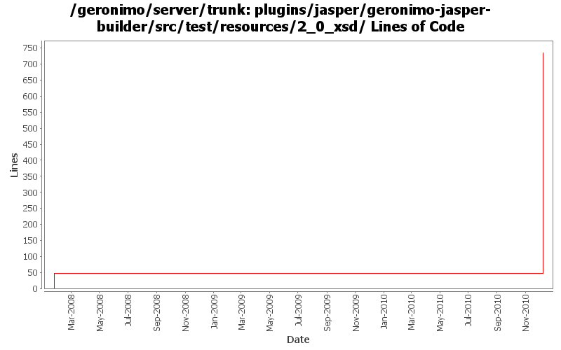

[root]/plugins/jasper/geronimo-jasper-builder/src/test/resources/2_0_xsd

| Author | Changes | Lines of Code | Lines per Change |
|---|---|---|---|
| Totals | 3 (100.0%) | 736 (100.0%) | 245.3 |
| xuhaihong | 1 (33.3%) | 688 (93.5%) | 688.0 |
| gawor | 2 (66.7%) | 48 (6.5%) | 24.0 |
GERONIMO-5726 There is no need for jasper builder to parse the whole tld files, it only needs the tag classes and listener classes for naming builder. Turn to use xmlbeans to find the interested elements. But currently, we have no way to do the tld validation.
688 lines of code changed in 1 file:
forgot about apache headers
17 lines of code changed in 1 file:
sometimes some elements were skipped during dtd->xsd translation causing validation errors (GERONIMO-3782)
31 lines of code changed in 1 file: